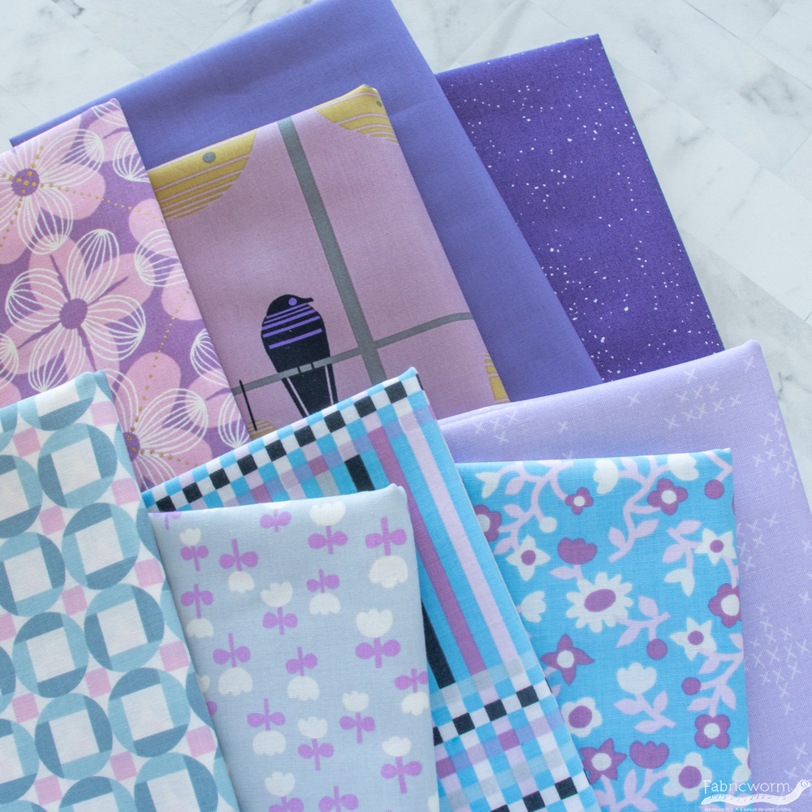

Established in 1990, VINTAGE Fashion Technology, the multiple award-winning Design Institute with 38+ learning centers across India, is nurturing masterminds from all over India to translate their dreams into success. Since its inception, the Institute has carved a niche in the field of design education and has metamorphosed into an industry leader that develops courses with a pulse on the needs of the industry.
VINTAGE FASHION'S Vision, as the motto says “Welcome to Imagination “is to provide a world-class infrastructure, with state of the art facility, well-equipped library and having the industry experts shaping them to upskill their creativity, developing their thoughts and executing their imagination. Vintage Institute's mission is to change how people perceive design and make India one of the Design Hub in the world. The Institute thrives for one goal; to constantly inspire and encourage students to follow the three pillars for which stands for: Innovation, Sustainability, and Eco-friendly.